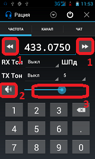

Частота

Самая главная вкладка, которая отражает все параметры действующие в данный момент: Приемная Частота, Передающий и принимающий тоны, шумоподавление, громкость, режим гарнитуры.
Для ввода частоты щелкните по полю ввода - в поле можно ввести частоты от минимальной до максимальной указанных в настройках.
Точка вводится автоматически при вводе 3 цифры, удаляется точка вместе с цифрой перед ней.
В поле ввода находится приемная частота, а передающая может быть сдвинута в большую или меньшую сторону. Сдвиг задается в настройках и может иметь отрицательное значение.
Кнопки рядом(№ 1) с полем частоты уменьшают(влево) и увеличивают(вправо) частоту на величину шага, который задается в
настройках. Приемная и передающие частоты увеличиваются или уменьшаются вместе, сохраняя величину сдвига.
Кнопка с Динамиком(№ 2) переключает режим "Спикер" и "Гарнитура" - если гарнитуры нет просто
звук от рации отключит(только в Runbo).
Громкость(№ 3) регулируется ползунком - но очень слабо(спасибо китайцам за кривую схему)
так что лучше устанавливать на минимум.
Экран сделан только портретным - чтобы было
удобнее и не было глюков при повороте.
Кнопка с крестиком Закрывает приложение оставляя модуль включенным, сканирование при
этом останавливается!
"Шпд" - Шумоподавление регулирует уровень шумов - установка значения "Выкл" - включает монитор на выбраной частоте.
Если сигнал слышен с обрывами нужно уменьшить значение Шумоподавителя.